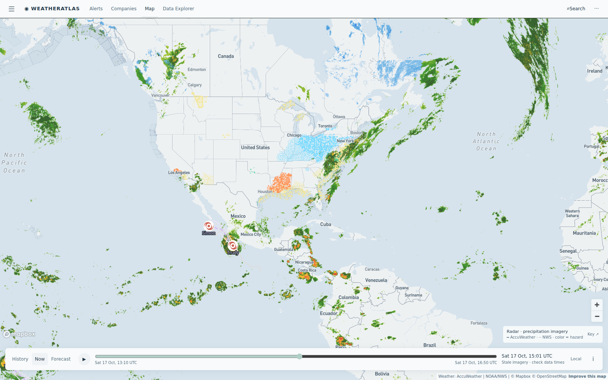

Daily severe-weather intelligence for LNG, refining, offshore, and terminal operators.

Live radar + active alert board from the AccuWeather-powered Atlas — captured ~15:00 UTC today.
| System / region | Status | Energy-asset impact |
|---|---|---|
| Post-frontal clearing — US Gulf coast marine zones | CLEARING | Gale Warnings ended overnight; residual Small Craft Advisories linger near shore. Cleanest loading window of the week across Cameron–Sabine, Port Fourchon, and Corpus corridors — backlogs from last night's gale holds clear through the weekend. Post-frontal air is dry: fire-weather flags (Red Flag / Wind Advisories) persist across Louisiana and East Texas parishes today. |
| Hurricane Trudy — East Pacific, closing on Michoacán/Mexico west coast | LANDFALL RISK | Trudy (Cat 2, ~90 mph, strengthening potential per NHC) tracks toward the southwestern Mexico coast this weekend — storm surge, damaging winds, and flooding rain near Lázaro Cárdenas and Manzanillo port zones. Mexico Pacific-coast port ops and cargo windows are the exposure; US Gulf energy coasts stay out of the cone. |
| Violent Typhoon CHAMPI — NW Pacific (121 mph) | TYPHOON | CHAMPI remains over open NW Pacific waters east of the Philippines — elevated seas on Asia–US LNG shipping lanes; no landfall threat to Japan/Korea terminals in the near window. Monitor if the track bends toward Okinawa or the East China Sea lanes. |
| Red Flag / fire weather — Louisiana & East Texas (post-frontal) | RED FLAG | Red Flag Warnings and Wind Advisories blanket the Lake Charles–Lafayette region behind last night's front — dry gusts and spark risk near Gulf Coast terminal and pipeline hot-work zones through this evening. |
Today's gap is a magnitude gap on a switching post-frontal morning. At the Calcasieu Pass LNG corridor, AccuWeather's midday hourly runs sunny and steady-warming; the free feed's same-hour line sits cloudy and roughly 9°F colder at the dock through the morning hours. On a return-to-work Saturday, that spread is the difference between crew call times made right and made twice.
Gales ended; post-frontal high pressure brings the cleanest loading day of the week. AccuWeather: sunny, 0% rain through the afternoon; the free feed runs ~9°F cold and cloudy on the same dock hours. Return-to-work timing is the story.
View live brief →RGV fire-weather regime easing; AccuWeather shows partly sunny, 0% rain, low-to-mid 70s while the free feed runs cloudy and 8–11°F colder on the same hours. Construction crane and crew planning is the story.
View live brief →